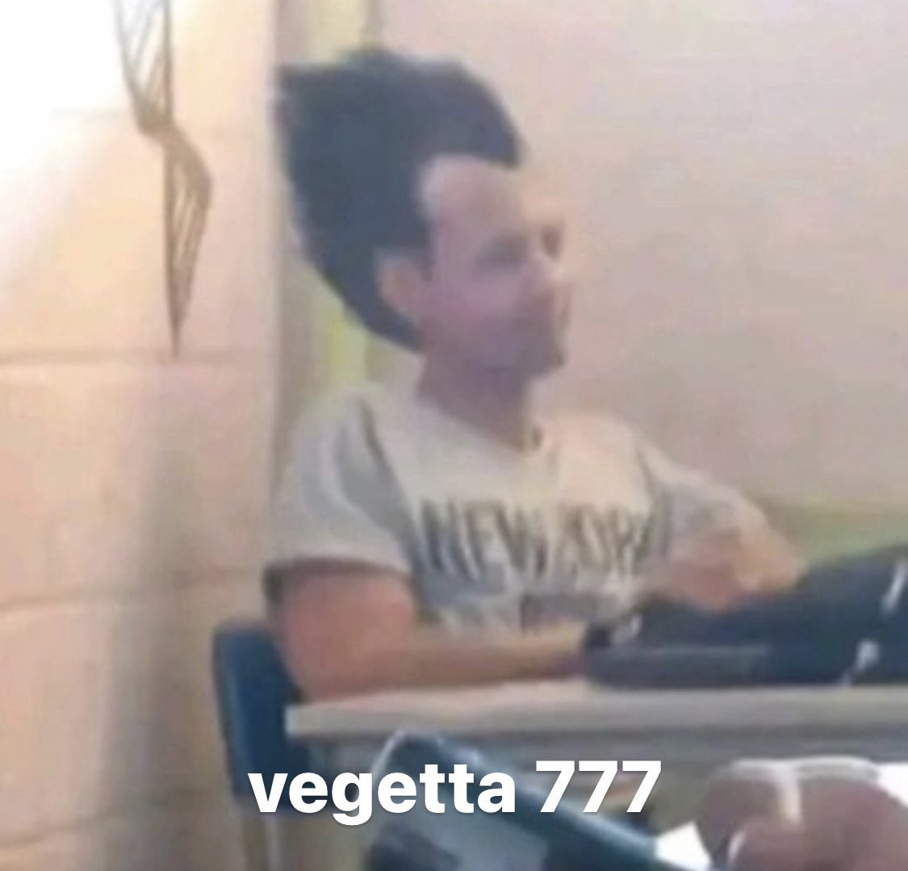

Benvinguda
Iván Díaz Martínez
Hola, el meu nom es Iván, tinc 18 anys i soc estudiant de DAW.
Les meves aficions
Els meus hobbies son jugar a el videojoc League of legends y veure futbol.
League of Legends es un joc altament competitiu i estratégic,el que ho fa emocionant i desafiant. Permiteix als jugadors demostrar les seves habilitats, treballar en equip y desenvolupar estrategies complexes.